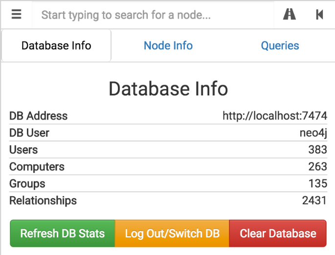

The search bar and menu are designed to be intuitive and operationally focused. The triple line in the top left will toggle the drop down for the 'Database Info', 'Node Info', and 'Queries' tabs.
The 'Database Info' tab shows basic information about your currently loaded database, including the number of users, computers, groups, and relationships (or edges). You may also perform basic DB management functions here, including logging out and switching DBs, as well as clearing (read: DELETING ALL INFORMATION FROM) your currently loaded DB (be careful!).
The 'Node Info' tab will display information about a node that you click on in the graph.
The 'Queries' tab will show the pre-built queries we include with BloodHound, as well as additional queries you can build in yourself. More information about this will be available later.